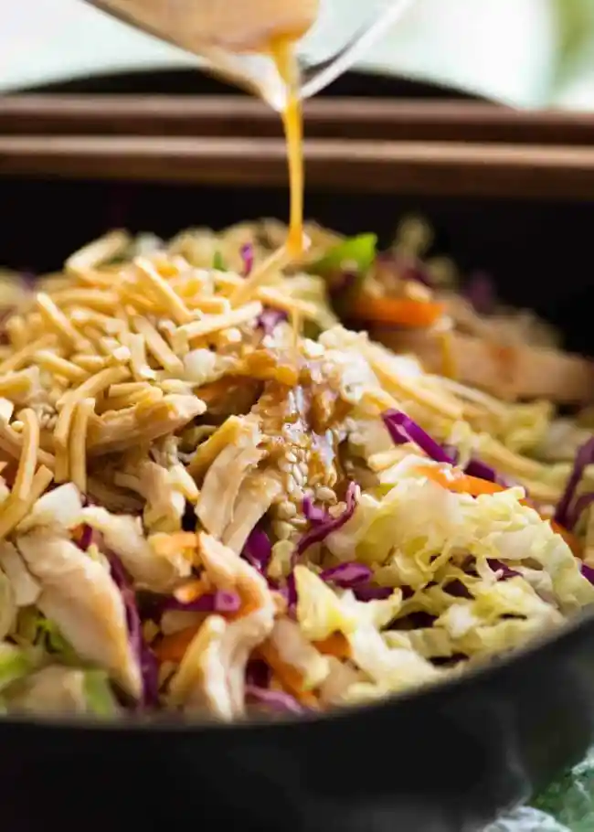

Free Recipes
This is my most made faux Asian salad. It’s “faux” because it’s in no way authentic Chinese and that’s totally ok. The Asian salad dressing I use in this salad is based on a recipe by David Chang of Momofuku. It’s made with all manner of Asiany ingredients – soy sauce, rice vinegar, sesame oil, garlic and ginger – but there’s plenty of flex here which I’ve jotted down in the recipe notes. I love the fresh hit of ginger and garlic in the dressing but I quite often make this salad using my standby simple Asian Sesame Dressing. Made with just soy sauce, sesame oil, vinegar, oil and sugar, it keeps for days, weeks even. It would be unusual if I didn’t have a jar of this lurking in the dark depths of my fridge at all times!
Ingredients
- Soy Sauce
- Vinegar
- Sesame Oil
- Grapeseed
- Sugar
- Fresh Ginger
- Garlic clove
- black pepper

Author: Nagi|Recipe Tin Eats | Prep:15 mins | Total:15 mins